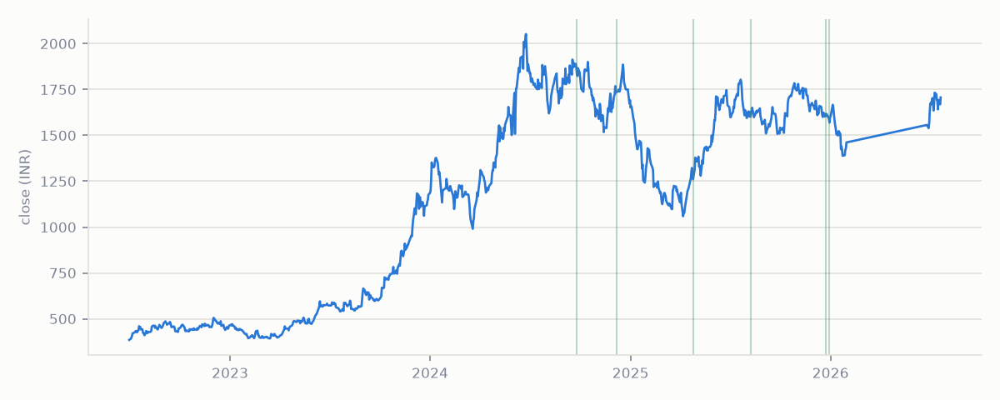

obscura
·
intel
Live feed
Tickers
Methodology
About
Construction - Real Estate
Prestige Estates Projects Ltd
PRESTIGE

Events detected
6
Most recent
2025-12-29
Max intensity
91.3
th pct
Event history
Date
Direction
Intensity
Novelty
2025-12-29
+ tone
60.7th pct
6
2025-12-23
+ tone
52.9th pct
136
2025-08-09
+ tone
49.6th pct
106
2025-04-25
+ tone
91.3th pct
139
2024-12-07
+ tone
81.8th pct
73
2024-09-25
+ tone
17.8th pct
first seen